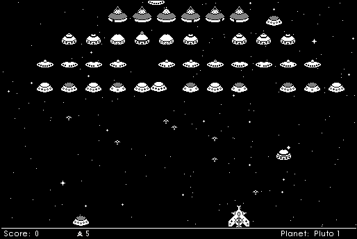

Download
Bedlam_1.2.zip (958K) Bedlam 1.2 repackaged into a zipped hfs disk image and checksum file. The disk image can be mounted with Mini vMac.
Install_Bedlam_1.2.sea.bin (971K) Bedlam 1.2 in the original format.
copyright: Ground Zero Software
mod date: Aug 26, 2000
license: freeware (former shareware), but requires registration
official url :
Bedlam
Game "reminiscent of Space Invaders". For "System 7 or greater".

If you find these downloads useful, please consider helping the Gryphel Project, which hosts them.
Here are the md5 checksums for the downloads, signed with Gryphel Key 5:
--------- GRY SIGNED TEXT --------- 1425646ef4c8c44fb66f42d4b7de75e1 Bedlam_1.2.zip 34e151aa8851cd6c5f0f97bdc641f88f Install_Bedlam_1.2.sea.bin ------- BEGIN GRY SIGNATURE ------- Gry/4Xa8CFcUzxdN/OZuI479XXvJkwa7QBFO6YjUvtmNjZtZ4+qwFxeo3sJwZOE9 RlIjAdGjREOr21RLTi2+rk6sTie57mpzjht3P5nQggCS2CZnOH1jW/nNDYZoPPzk CWJrpj670OA5F1TbNL6C0Tvepnxl7Wf8hppSEOU560K31ePfZV0IIqQOWV7DIgAn -------- END GRY SIGNATURE --------